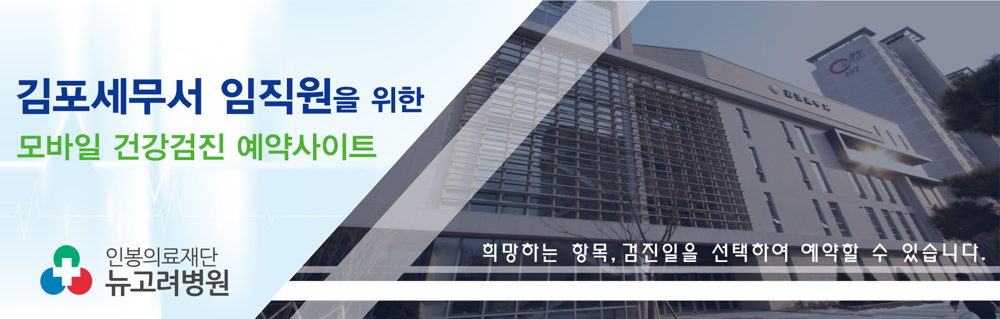

커뮤니티 광장
검진 전 주의사항
이용안내
건강정보
건강검진 전날
1. 금식
오전검진
검진 전날 저녁식사는 오후 8시 이전에 가볍게 드시고 이후에는 물 이외의 음식물을 드시지 마십시오. (기름진 음식 및 과식 피하기)
오후검진
검진 전날 밤 12시 이후부터 금식하십시오.
술, 담배 및 지나친 피로를 피하시고 충분히 휴식하시기 바랍니다.
2. 대변
대변채취는 검진 전날 또는 당일에 밤알 크기 정도를 채변용기에 넣어 주십시오.
검사의 정확도를 높이기 위해 채취하신 대변은 차고 서늘하게 보관해 주십시오.
3. 약물
위, 대장 내시경을 예약하신 분 중 심장이나 뇌혈관 질환으로 아스피린 등의 혈액응고 억제제를 복용하시는 경우 반드시 담당 의사와 상의 후 검진하십시오.
4. 여성
가임기의 여성은 검진 예약 전에 반드시 임신여부를 확인해 주십시오.
생리중인 경우 검사 내용에 제한이 있을 수 있습니다.
건강검진 당일
1. 금식
물, 껌, 담배, 아침식사 등을 일절 피하십시오.
2. 약 복용
당뇨약
건강검진 당일 아침에는 인슐린이나 당뇨약의 복용을 금합니다.
혈압, 심장질환, 간질 약
건강검진 당일 새벽 6시 이전에 최소량의 물과 함께 복용하십시오.
단, 위장 조영술을 하는 분은 약을 드시지 마시고 가져 오시기 바랍니다.
3. 준비물
장신구, 귀중품은 분실 위험이 있으니 소지하고 오지 마십시오.
교정시력 측정을 위해 안경이나 콘택트렌즈를 가져오시기 바랍니다.
건강검진 문진표, 채변통을 지참하여 주시기 바랍니다.
4. 기타사항
수면 내시경 검사를 하시는 분은 검진 후 자가 운전이 위험하므로 대중교통을 이용해 주십시오(보호자 동반) 생리중인 분은 차후 부인과 및 소변검사를 위해 재 방문 하셔야 합니다.
건강검진 이후
1. 위내시경 검사 후 최소 1시간~2시간 정도는 음식물 먹는 것을 주의해야 합니다.
2. 결과에 대해서 궁금하거나 불안한 사항에 대해 바로 질문해 주십시오.